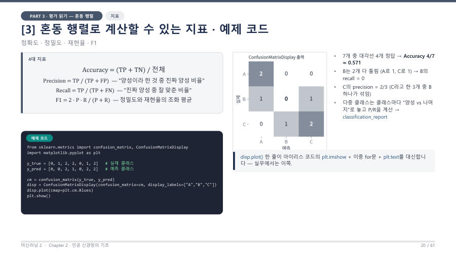

네 가지 지표 — 분모가 전부예요 ★
혼동행렬의 숫자 네 개로 지표를 만들어요. 외울 것은 식이 아니라 분모에 무엇이 들어가는가예요. 교수님도 "단순 암기하지 말고 분모에 뭐가 들어가는지 알라"고 했어요.
| 지표 | 식 | 분모의 뜻 |
|---|---|---|
| Accuracy 정확도 | (TP + TN) / 전체 | 전체 개수. 맞힌 것(대각선)의 비율 |
| Precision 정밀도 | TP / (TP + FP) | 모델이 "양성"이라고 한 것 전부 (예측 양성 = 열). 그중 진짜 양성의 비율 |
| Recall 재현율 | TP / (TP + FN) | 실제 양성 전부 (실제 양성 = 행). 그중 모델이 찾아낸 비율 |
| F1 | 2·P·R / (P + R) | 정밀도와 재현율의 조화평균. 둘이 모두 높아야 높아요 |
교수님은 정밀도를 Precision, 재현율을 Recall이라고 한글과 영어를 모두 알아 두라고 했어요. 시험 보기에는 둘이 섞여서 나와요.
바다에 진짜 물고기 50마리가 있고, 그물로 40개를 건졌는데 그중 30개가 진짜 물고기이고 10개는 쓰레기였어요. 정밀도는 건진 것 중 진짜 비율(30/40)이고, 재현율은 바다 전체 물고기 중 건진 비율(30/50)이에요.
그물을 아무 데나 크게 던지면 재현율은 오르지만 쓰레기가 늘어 정밀도가 떨어져요. 확실한 곳에만 던지면 정밀도는 오르지만 놓치는 물고기가 늘어 재현율이 떨어져요. 그래서 둘은 서로 줄다리기를 해요.
F1은 왜 평균이 아니라 조화평균일까요? 한쪽이 형편없으면 점수도 형편없게 만들려는 거예요. 정밀도 1.0, 재현율 0.1이면 단순 평균은 0.55라 괜찮아 보이지만, F1은 2·1.0·0.1 / 1.1 ≈ 0.18로 확 떨어져요. 어느 한쪽만 높이는 꼼수가 안 통해요.

정밀도의 분모는 "예측한 양성"(열), 재현율의 분모는 "실제 양성"(행)이에요. 둘 다 위(분자)는 TP로 같고, 아래만 FP와 FN으로 달라요. "Precision의 분모에는 Predicted positive, Recall의 분모에는 Real positive"라고 첫 글자로 기억해도 좋아요.
정밀도(Precision)는 양성으로 예측한 것 중 실제 양성의 비율 TP/(TP+FP)이고, 재현율(Recall)은 실제 양성 중 양성으로 맞힌 비율 TP/(TP+FN)이다. F1은 두 값의 조화평균 2PR/(P+R)이다. (객관식 요령) 분모가 "예측 양성 전체"인지 "실제 양성 전체"인지부터 확인한다.
잠깐 확인 — 정밀도와 재현율은 분자가 같은데 분모는 각각 무엇인가요?
분자는 둘 다 TP예요. 정밀도의 분모는 TP+FP(양성이라고 예측한 전부), 재현율의 분모는 TP+FN(실제 양성 전부)이에요.
자료: 4주차 · 머신러닝2_chapter2_student_ver.pdf(PART 3, p.18–21) · 머신러닝04.txt, 머신러닝07.txt(10/19 중간고사 복습)